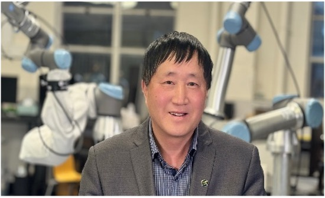

Cyber-Physical Systems: Issues, Design and Opportunities
Distinguished Professor Peng Shi, FATSE, FEAJ, MAE, IEEE, FIET, FIE, FIETI
Electrical and Electronic Engineering
School of Electrical and Mechanical Engineering
College of Engineering and Information Technology
Adelaide University
Adelaide SA 5005, Australia
Email: peng.shi@adelaide.edu.au

His research interests span systems and control theory, with applications to autonomous and
robotic systems, intelligent systems, network systems, and cyber-physical systems. His work
has been globally recognized with numerous prestigious distinctions. These include the IEEE
Lotfi Zadeh Award for Emerging Technologies (2027); the IEEE Lotfi Zadeh Pioneer Award and
IEEE Norbert Wiener Award (SMCS, 2025 and 2024); the Annual Scientific Award and the Ramesh
Agarwal Lifetime Achievement Award from the International Engineering and Technology
Institute (IETI, 2024 and 2023); and the M. A. Sargent Medal (Engineers Australia, 2022).
Additionally, he has been named a Highly Cited Researcher in both engineering and computer
science (Web of Science, 2014–2025) and recognized as the Most Cited Researcher in Electrical
and Electronic Engineering (Times Higher Education, 2018). He has also earned a place on the
Lifetime Achiever Leaderboard and as a Field Leader (The Australian Research Review,
2019–2024). His institutional accolades include the Stephen Cole the Elder Award for
Excellence in Research Supervision and the Outstanding Research Achievement Award from the
University of Adelaide (2025 and 2020), as well as the Chancellor’s Gold Medal for
Outstanding Research Performance from Victoria University (2018).
Professor Shi's extensive professional service includes roles as a member of the Fellow
Evaluation Committee, Nomination Committee, Award Committee, Board of Governors, Vice
President, and Distinguished Lecturer for the IEEE SMC Society, and General Chair for
International Conferences. He is a Fellow of the Australian Academy of Technological Sciences
and Engineering, and an International Fellow of the Engineering Academy of Japan, the Academy
of Europe, the European Academy of Sciences and Arts, and the Academy of Romanian Scientists.
He is also a Fellow of the IEEE, IET, IEAust, CAA and IETI. Currently, he serves as the
Editor-in-Chief of IEEE Transactions on Cybernetics, a Senior Editor of IEEE Access, and an
Associate Editor for Automatica and IEEE Transactions on Artificial Intelligence.